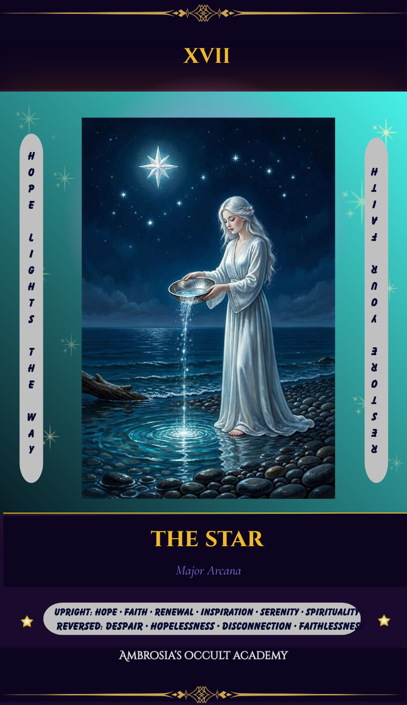
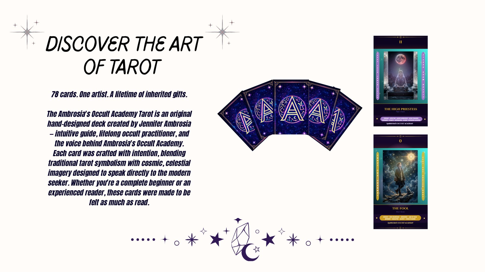

✨ This Week — July 15–21, 2026

Upright: Hope · Inspiration · Healing · Guidance · Reconnection
Reversed: Discouragement · Feeling off-course · Creative block · Needing rest
🔮 Light Path Spread — Card Positions

Card 1 — What’s Being Healed
Card 2 — What Inspires Me Now
Card 3 — Where Hope Leads
Ambrosia's Occult Academy Tarot Deck
My original, hand-drawn 78-card tarot deck is finally here. Get the digital PDF instantly, or reserve your spot for a printed hard-copy deck.

📄 PDF Deck — $17.50
All 78 cards as high-resolution, print-ready images you can download instantly — perfect for digital use or printing your own deck at home.
🛒 Buy the PDF Deck — $17.50🃏 Hard-Copy Deck — Pre-Order
Printed, physical decks are in the works. Price is still being finalized — reserve your spot below and I'll email you as soon as pricing and shipping are confirmed.
✨ Reserve My DeckThe number 8 carries themes of empowerment, momentum, and manifestation. It’s the number of cycles, infinity, and the flow between the spiritual and material worlds. This week encourages you to step into your strength, make confident choices, and trust your ability to create real change.
In the tarot: Strength (VIII) embodies this energy — courage, inner power, compassion, and the quiet confidence that comes from self-trust.
This week ask yourself: Where am I ready to take the lead? What am I capable of that I’ve been underestimating?
Your personal week number: Add your Life Path number to 8. If the result is above 9, reduce it (e.g., 14 = 1+4 = 5). That number reveals your personal theme for the week.
Want Jennifer to Read the Spread for You?
For $19.95, receive a full personalized Crossroads reading by email — your cards pulled, interpreted in the context of your specific question, with compassionate and clear guidance.
📋 Submit Request Form